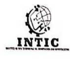
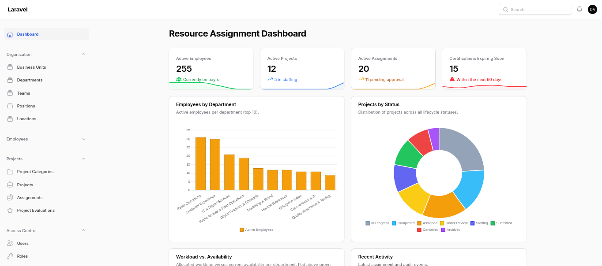
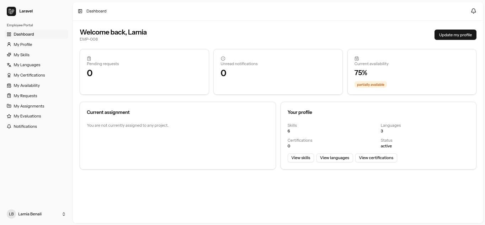
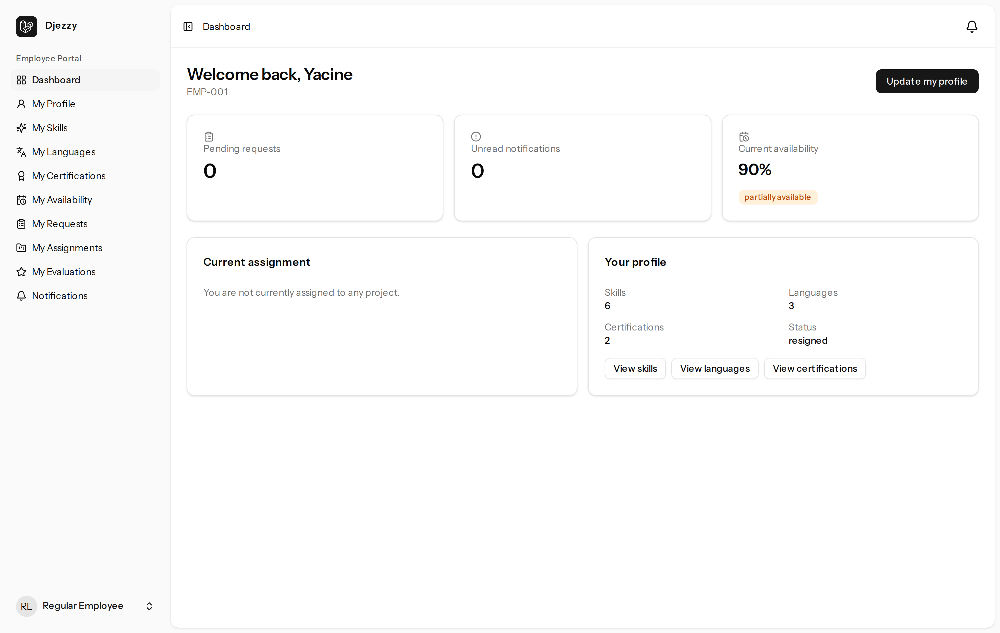
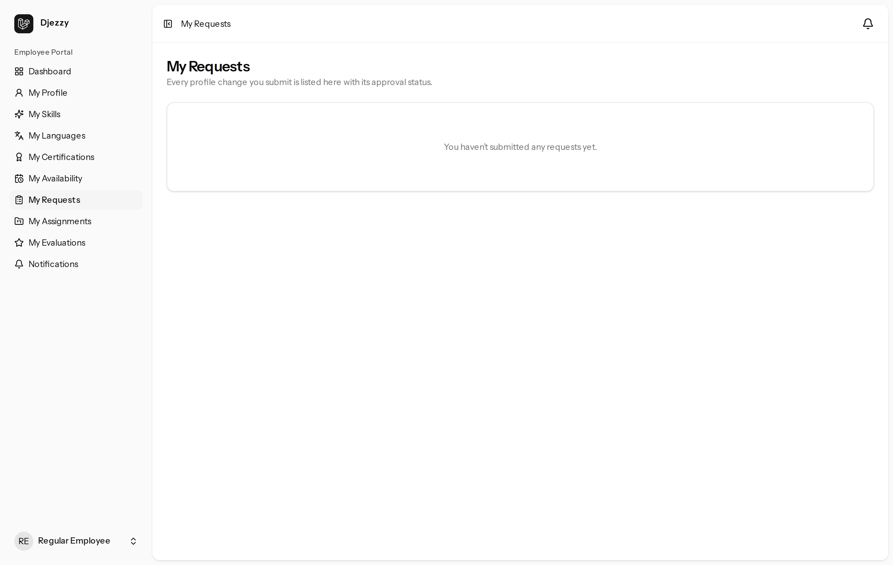
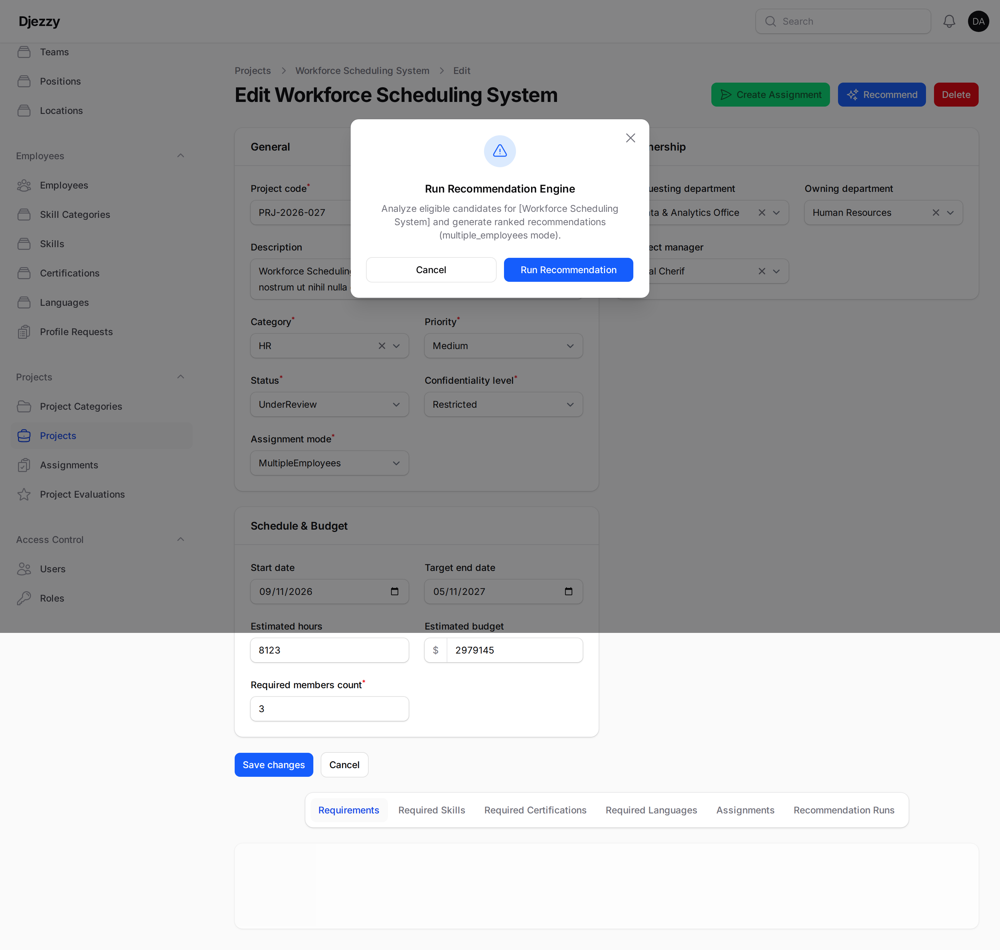
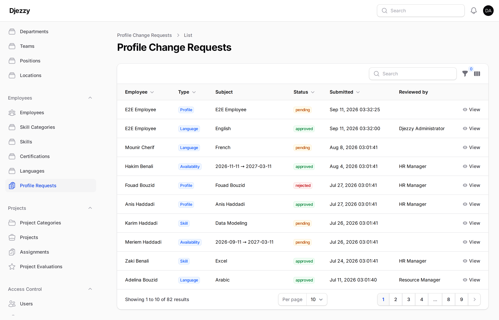
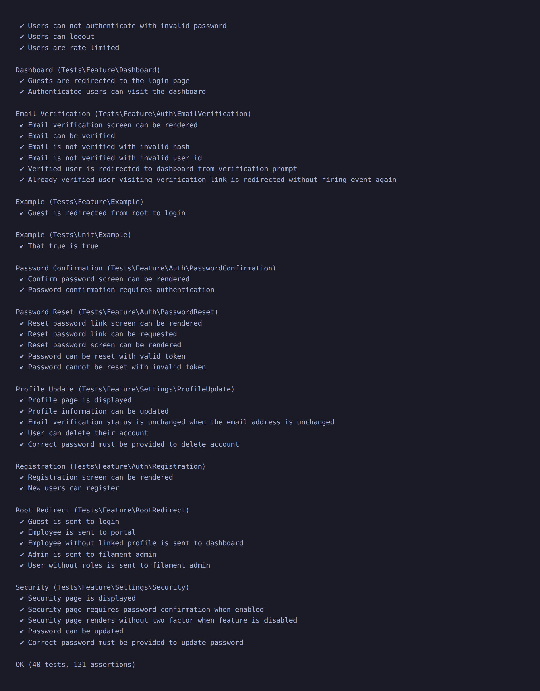

Design and Implementation of a Resource Assignment and Allocation Platform for Djezzy
Case Study: IT and HR Departments
The Problem: Manual Resource Allocation
The operational challenges of managing technical staff across telecom initiatives
Project Objectives
Four clear pillars to modernize human resource allocation
One central database for 300+ employees, skills, certifications, and availability.
Match candidate skills and free hours to project requirements using scoring formulas.
Require manager approval before work starts and maintain full audit traceability.
Give employees a self-service portal to update skills and upload verified credentials.
Our Solution: Two Dedicated Interfaces
One unified backend system supporting two tailored user experiences


User Roles & Access Control
Six roles with clear separation of responsibilities
Core Workflows: How Work Moves
Two clear, governed processes for project staffing and profile updates
Application Architecture: How It Works
A simple, solid 3-tier architecture with Laravel, React, and PostgreSQL
Interfaces running in user web browsers:
The engine executing all business logic:
Where all company data lives securely:
Database Design & Relational Rigor
44 tables protected by PostgreSQL database-level constraints
departments, teams, positions, locations
employees, employee_skills, certifications
projects, assignments, assignment_members
profile_change_requests, audit_logs
Rule: A project can have only ONE active assignment at a time, but retains full history:
Key Feature: The Recommendation Engine
An intelligent matching formula to find the right candidate for every project
Security & Complete Audit Trail
Biometric passkeys, two-factor authentication, and immutable event logs
Passwordless login using biometric hardware (TouchID, Windows Hello, or Security Keys).
TOTP 6-digit codes via Google or Microsoft Authenticator, plus 8 recovery codes.
Every status change saves user ID, IP address, timestamp, and a JSON before/after diff.
assignment_approved
User: Admin #14
Old Status: pending → New Status: approved
Audit ID: #2084
Application Demo: Employee Portal
Real interfaces built with React 19 and Tailwind CSS at /portal/*


Application Demo: Manager Back-Office
Candidate matching modal and HR approval workflow in Filament 5


Technical Challenges & How We Solved Them
Four concrete engineering obstacles overcome during development
Testing & Software Quality
124 automated PHPUnit tests, 492 assertions, and 7 browser specs

Current Limits & Future Improvements
What the system does today and realistic next steps
Thank You for Your Attention
We are ready to answer the honorable jury's questions.